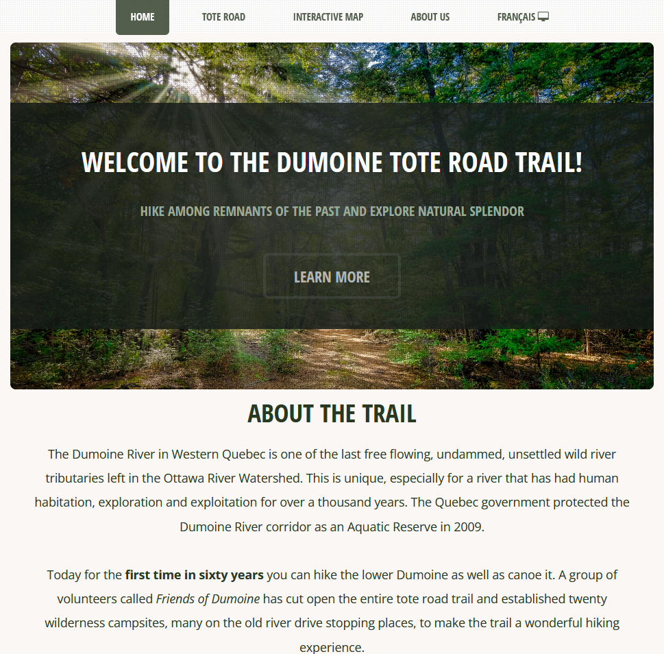

A multi-page website was designed to house content provided by our client covering: who the partners of the project are, the history of the trail
and surrounding areas, a listing of outdoor resources, and an outline of trail best practices. Our team also put together a page of resources for
planning a trip out to the Dumoine Tote Road Trail, including a weather forecast and information on emergency services. The website is in the process
of being translated into French. While the French site is under construction, the corresponding French web map is still accessible.
Our team designed an 8.5 x 11" double sided georeferenced static trail map. The map is inclusive with campsites, notable fetaures and includes the local history of the Dumoine Tote Road Trail.

A fully interactive web map was created to provide users with an opportunity to get to know the Dumoine Tote Road Trail and its unique features before venturing out to hike it themselves.
It showcases the backcountry campsites, historically significant areas, note-worthy attractions, access points, side trails and more! This map is included in the website and is available in both
English and French. Please note that this map is intended to be used on desktop; not all features are functional on mobile.
Our team also designed two survey forms to facilitate data collection about points of interest, hazards and maintenance requests along the trail.
These forms will be used by volunteers of the Friends of the Dumoine River to keep the website, maps and trail up to date for users!
Please note that KoBoToolbox forms are not accessible while using private browsing. These forms are not designed for use outside of a traditional web browser.